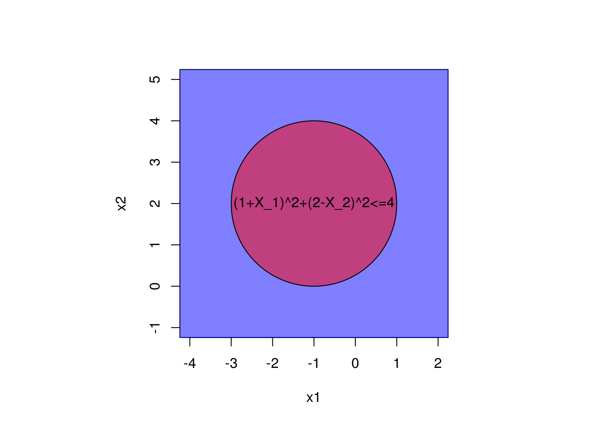
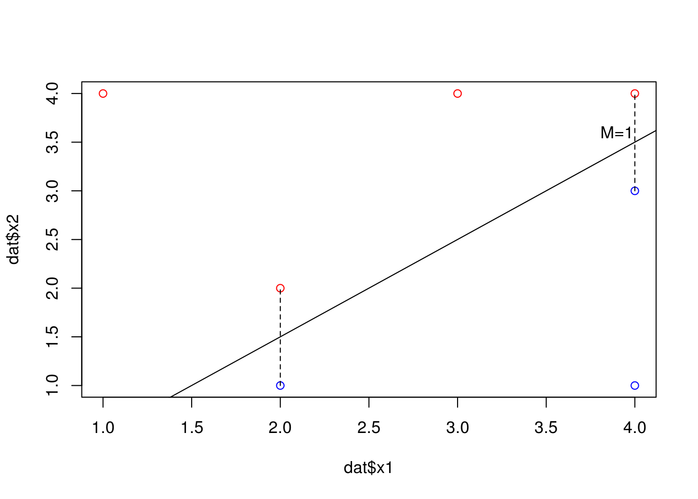
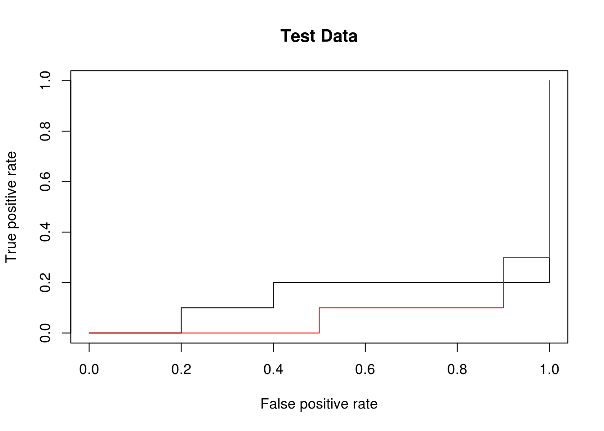
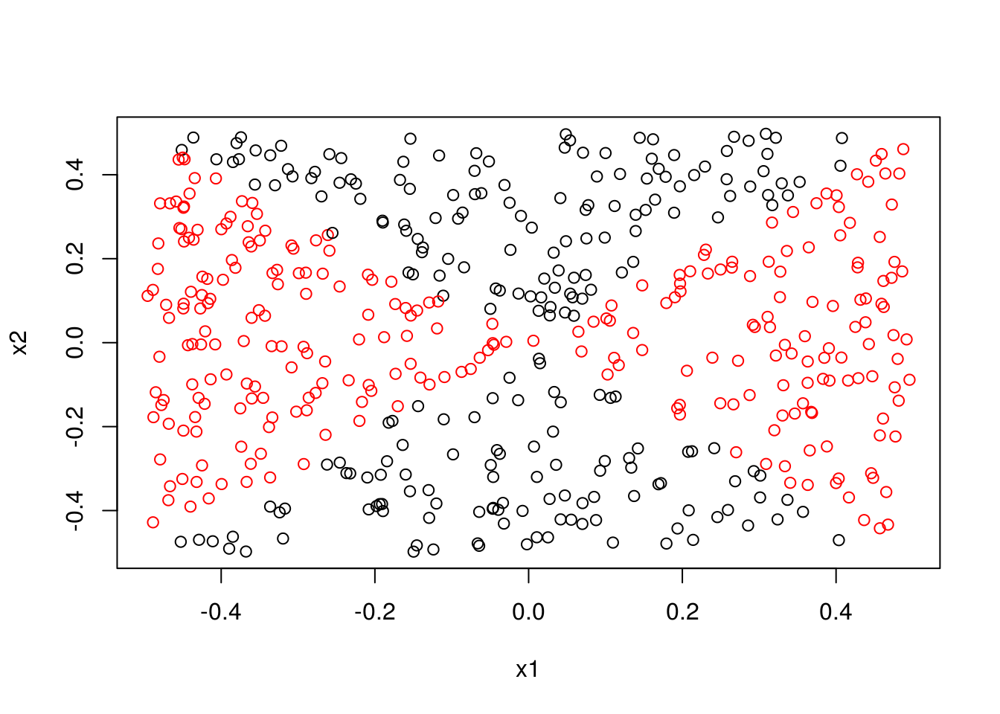

Chapter 9 Support Vector Machines
x1<-seq(-2,3,by=.01) x2 <- 1+3*x1 plot(x1,x2,type="l",xlim=c(-1,2),ylim=c(-2,8)) polygon(x=c(-2,-2,3,3),y=c(x2[1],10,10,x2[length(x2)]),density=NA,col=rgb(1,0,0,.5)) text(x=.5,y=6,"1 + 3 x1 - x2 < 0") text(x=.5,y=-1,"1 +3 x1 - x2 > 0")x2 <- 1 - .5*x1 plot(x1,x2,type="l",xlim=c(-1,2),ylim=c(-1,2)) polygon(x=c(-2,-2,3,3),y=c(x2[1],10,10,x2[length(x2)]),col=rgb(1,0,0,.5)) text(x=.5,y=1.5,"-2 + x1 + 2 x2 > 0") text(x=.5,y=0,"-2 + x1 + 2 x2 < 0")- This is the equation of a circle centered at (-1,2) with radius 2.
par(pty="s") #set plot to be square so we don't distort the circle. plot(x=c(-4,2),y=c(-1,5),type="n",xlab="x1",ylab="x2") x<-seq(-3,1,by=.01) y <- sqrt(4-(x+1)^2) xrev <- x[length(x):1] yrev <- y[length(y):1] polygon(c(x,xrev),c(y+2,-yrev+2))- The points \((1+X_1)^2 + (2-X_2)^2 \leq 4\) are inside the circle.
xrev <- x[length(x):1] yrev <- y[length(y):1] par(pty="s") #set plot to be square so we don't distort the circle. plot(x=c(-4,2),y=c(-1,5),type="n",xlab="x1",ylab="x2") rect(-5,-5,10,10,col=rgb(0,0,1,.5)) #Outside the circle is blue for part c polygon(c(x,xrev),c(y+2,-yrev+2),col=rgb(1,0,0,.5)) text(x=-1,y=2,"(1+X_1)^2+(2-X_2)^2<=4")- \((0,0)\) is blue, \((-1,1)\) is red, \((2,2)\) is blue, \((3,8)\) is blue.
- If we expand the quadratic terms, we can see this, \[\begin{equation} (1+X_1)^2 + (2-X_2)^2 = 1 + 2X_1 + X_1^2 + 2 - 4X_2 + X_2^2 \end{equation}\]
dat<-data.frame( x1=c(3,2,4,1,2,4,4), x2=c(4,2,4,4,1,3,1), y =rep(c("red","blue"),length.out=7,each=4) ) plot(dat$x1,dat$x2,col=as.character(dat$y))- The optimal hyperplane goes through (2,1.5) and (4,3.5). Using linear equations then the equation for the hyperplane becomes \(-0.5+X_1-X_2=0\).
plot(dat$x1,dat$x2,col=as.character(dat$y)) abline(-0.5,1)- We would classify as red if \(-0.5+X_1-X_2<0\) and blue otherwise. The values the \(\beta\)’s are \(\beta_0=-0.5\), \(\beta_1=1\), and \(\beta_2=-1\).
plot(dat$x1,dat$x2,col=as.character(dat$y)) abline(-0.5,1) lines(c(2,2),c(1,2),lty=2) lines(c(4,4),c(3,4),lty=2) text(3.9,3.6,"M=1")- See the last plot.
- The seventh obsevation is in the bottom right so it’s far from the hyperplane.
- We can have a line go through the bottom most red observation and the top most blue observation. This is a worst case hyperplane. The equation of this would be \(1 + .5X_1 - X_2 = 0\)
plot(dat$x1,dat$x2,col=as.character(dat$y)) abline(1,.5)dat2 <- rbind(dat,c(2,2.5,"blue")) with(dat2,plot(x1,x2,col=as.character(y)))I use a cubic polynomial to separate the data.
x<-sort(rnorm(100,1,2)) y<-rnorm(100) f <- function(x) 1.5*(x)*(x-1)*(x-3) labs<-factor(ifelse(y>f(x),"black","red")) plot(x,y,col=labs) lines(x,f(x))Now to classify with SVM.
library(e1071) set.seed(1) train<-sample.int(100,80) dat <- data.frame(x,labs) (poly.tune<-tune(svm,labs~.,data=dat[train,],kernel="polynomial",ranges=list(d=1:5,cost=c(.001,.01,.1,1,10))))## ## Parameter tuning of 'svm': ## ## - sampling method: 10-fold cross validation ## ## - best parameters: ## d cost ## 3 1 ## ## - best performance: 0.175set.seed(1) (exp.tune <-tune(svm,labs~.,data=dat[train,],kernel="radial",ranges=list(gamma=c(.01,.05,.1,.5,1,5),cost=c(.001,.01,.1,10))))## ## Parameter tuning of 'svm': ## ## - sampling method: 10-fold cross validation ## ## - best parameters: ## gamma cost ## 1 10 ## ## - best performance: 0.15Now we test the best poly versus the best radial on the test set.
poly.mod <- svm(labs~.,data=dat[train,],kernel="polynomial",d=poly.tune$best.parameters$d,cost=poly.tune$best.parameters$cost) exp.mod <- svm(labs~.,data=dat[train,],kernel="radial",gamma=exp.tune$best.parameters$gamma,cost=exp.tune$best.parameters$cost) library(ROCR)## Loading required package: gplots## ## Attaching package: 'gplots'## The following object is masked from 'package:stats': ## ## lowess## Loading required package: methodsrocplot=function(pred, truth, ...){ predob = prediction(pred, truth) perf = performance(predob , "tpr", "fpr") plot(perf,...) } fitted=attributes(predict(poly.mod,dat[-train,],decision.values=T))$decision.values rocplot(-fitted,dat[-train,"labs"],main="Test Data") #for some reason, I have to make the #fitted values negative for the ROC curve to display correctly. fitted=attributes(predict(exp.mod,dat[-train,],decision.values=T))$decision.values rocplot(-fitted,dat[-train,"labs"],add=T,col="red") The ROC curve tells us that the radial kernel works best. The tables below show how the final models classified. They ended up performing just as well as each other on the data.
poly.fit=predict(poly.mod,dat[-train,]) table(poly.fit,dat[-train,]$labs)## ## poly.fit black red ## black 9 2 ## red 1 8exp.fit=predict(poly.mod,dat[-train,]) table(exp.fit,dat[-train,]$labs)## ## exp.fit black red ## black 9 2 ## red 1 8- I will jus copy their example.
set.seed(92) x1<-runif(500)-0.5 x2<-runif(500)-0.5 y<-1*(x1^2-x2^2 > 0)plot(x1,x2,col=y+1)log.mod <- glm(y ~ x1+x2,family=binomial)y.pred<-predict(log.mod,type="response") y.pred<-1*(y.pred>.5) plot(x1,x2,col=y.pred+1)Note that a single value was predicted to be 0.
any(predict(log.mod,type="response")<.5)## [1] TRUElog.nl.mod <- glm(y ~ poly(x1,d=2)*poly(x2,d=2),family=binomial)## Warning: glm.fit: algorithm did not converge## Warning: glm.fit: fitted probabilities numerically 0 or 1 occurredy.pred<-predict(log.nl.mod,type="response") y.pred<-1*(y.pred>.5) plot(x1,x2,col=y.pred+1)Looks better, but there is still misclassification.